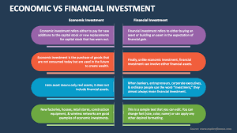
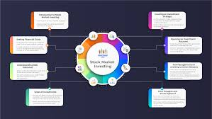
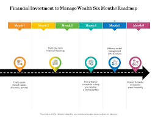

FINANCE INVESTMENT

what You know About Investment ??
Investing in finance is the practice of allocating money into assets with the expectation of generating profit over time. Investments can take various forms, including stocks, bonds, mutual funds, real estate, commodities, and cryptocurrencies. Each type carries its own risk-reward profile, requiring investors to align their choices with their financial goals, risk tolerance, and time horizon.
Stock market investments involve buying shares of publicly traded companies, offering potential capital appreciation and dividends. Bonds, on the other hand, provide fixed-income returns and are generally considered safer but with lower growth potential. Mutual funds and exchange-traded funds (ETFs) allow diversification by pooling money into a basket of securities, reducing individual asset risk. Real estate investments generate returns through property appreciation and rental income, while commodities like gold and oil act as hedges against inflation.
Successful investing requires research, strategy, and discipline. Fundamental analysis examines a company’s financial health, while technical analysis studies price trends. Long-term investors often favor a buy-and-hold approach, whereas traders engage in short-term strategies like swing or day trading. Risk management—through diversification, stop-loss orders, and asset allocation—is crucial to mitigate losses.
External factors such as economic cycles, interest rates, and geopolitical events influence investment performance. Staying informed through financial news, market trends, and expert insights helps investors make educated decisions. With the rise of fintech, platforms like robo-advisors and mobile trading apps have democratized investing, making it accessible to a broader audience. Whether aiming for wealth growth, retirement planning, or passive income, a well-structured investment strategy is key to financial success.

Road Map For Investment

A financial roadmap serves as a strategic guide, helping to outline both short- and long-term financial goals. It's important to set specific goals. Whether it's buying a home, funding education, or planning for retirement, having a defined vision allows you to allocate your resources effectively.
NOTES ADDED